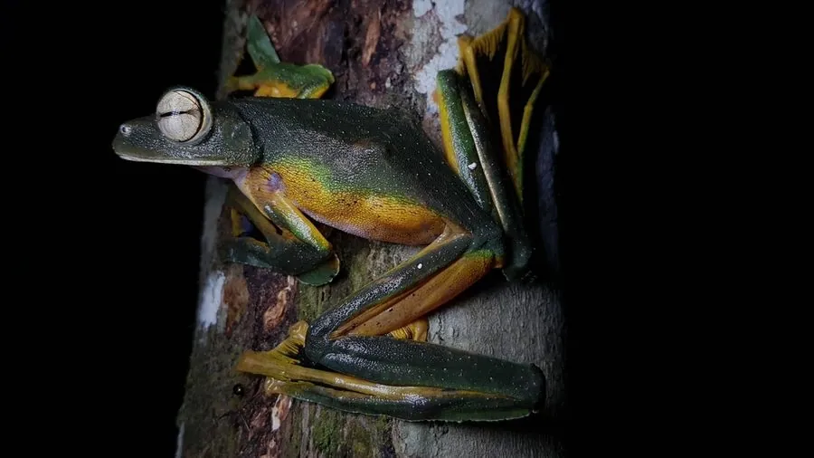

两栖动物 · 动物界
华莱士飞蛙 Rhacophorus nigropalmatus

东南亚雨林中的大型树蛙，脚趾间有宽大的蹼膜，可以在树间滑翔十余米，滑翔能力令人称奇，是著名的“飞蛙”之一。
- 分类
- 门脊索动物门纲两栖纲目无尾目科树蛙科属树蛙属
- 栖息环境
- 东南亚热带雨林的林冠层与溪流附近的树木
- 地理分布
- 马来西亚、印度尼西亚、泰国南部等东南亚雨林
- 保护级别
- IUCN 无危（LC）；非中国原产，在中国无保护级别
物种志
华莱士飞蛙体长 8–10 厘米，雌蛙大于雄蛙，身体扁平，头部宽大，眼睛大而突出，背部呈鲜绿色，腹部淡黄，脚趾间有宽大的黑色蹼膜，四肢外侧也有皮膜，展开时像一顶小降落伞；趾端有吸盘，能牢牢吸附在树枝上。
它分布于马来西亚、印度尼西亚、泰国南部等地的热带雨林，栖息于林冠层，夜间捕食昆虫和其他小型无脊椎动物。滑翔时它从高枝跃下，张开四肢和蹼膜，以较缓的角度滑向另一棵树，可滑翔十余米甚至更远。繁殖期雄蛙在水面上方的枝叶上鸣叫，雌蛙排出分泌物并用后肢搅拌成泡沫巢，卵产于其中，孵化后的蝌蚪落入水中。它目前被列为无危物种，但雨林砍伐正威胁其栖息地。
形态与习性
- 食性昆虫和其他小型无脊椎动物
- 体长8–10 cm
- 寿命约 5–8 年
- 繁殖卵生，卵产于水面上的泡沫巢，蝌蚪落入水中
- 活动节律夜行性，白天伏在树冠层
- 特点趾间宽蹼可展开滑翔，最远可达十余米
趣味知识
- 华莱士飞蛙并不会真正飞行，而是张开蹼膜在树间滑翔。
- 它的脚趾间有宽大的黑色蹼膜，张开时像一顶小降落伞。
- 这种蛙以博物学家华莱士的名字命名，是东南亚雨林的明星物种。